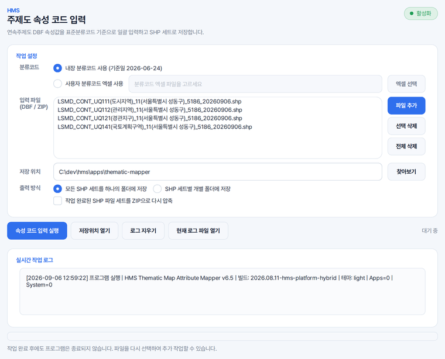

용도지역 코드를 이름으로 읽기
용도지역 · 용도지구 자료는 코드로만 옵니다. 그때마다 코드표를 뒤지지 않고, 몇천 줄이라도 코드명을 한 번에 채웁니다.
HMS 주제도는 UQA111 같은 코드만 든 속성표에 사람이 읽을 수 있는 이름을 자동으로 채워 넣습니다. 표준분류코드표가 프로그램 안에 들어 있고, 원본은 건드리지 않습니다.
SHP 를 고르면 같은 이름의 DBF 를 찾아 넣고, ZIP 안에 든 ZIP 도 풀어서 처리합니다.
코드 칸과 코드명 칸을 채우고, 칸이 없으면 새로 만들어 넣습니다.
용도지역 · 용도지구 자료는 코드로만 옵니다. 그때마다 코드표를 뒤지지 않고, 몇천 줄이라도 코드명을 한 번에 채웁니다.
도로 · 주차장 같은 도시계획시설 자료도 MNUM 을 읽어 '중로2류(폭 15m~20m)' 처럼 코드명을 채웁니다.
시 · 군 · 구별로 받은 연속주제도 ZIP 여러 개를 목록에 담아 일괄 처리하고, 결과를 한 폴더에 모을지 세트마다 나눌지 고릅니다.
담아 둔 코드표의 기준일이 화면에 적혀 있어, 더 새 표가 필요하면 분류코드 엑셀을 골라 그 표로 채웁니다.
기본은 기준일이 함께 적힌 내장 분류코드이며, 다른 표를 쓰시려면 '사용자 분류코드 엑셀 사용' 을 고르고 엑셀을 지정합니다.
[파일 추가]로 고르거나 창 안으로 끌어다 놓으며, 저장 위치가 비어 있으면 원본이 있는 폴더가 들어갑니다.
결과를 한 폴더에 모을지 세트마다 폴더를 나눌지 고르고, 원하시면 ZIP 으로 다시 묶습니다.
끝나면 몇 건을 처리했는지, 코드표에 없어 코드명을 채우지 못한 줄이 몇 건인지 알려 드리고 결과 폴더를 엽니다.
HMS Thematic Map Attribute Mapper fills in code names for Korean continuous thematic map shapefiles, such as zoning layers that carry only codes like UQA111. It reads the standard classification code from the MNUM field and writes the code and its name to the DBF, saving a new shapefile set and leaving the originals untouched. It runs on Windows, and its screens are in Korean.
가상의 사업지(성수2지구 지구단위계획) 자료를 넣어 찍은 화면입니다.

MNUM 의 21~26번째 글자에 든 여섯 자리 표준분류코드(예: UQS118)를 읽어 코드표에서 이름을 찾습니다. 찾은 코드와 이름은 코드 칸과 코드명 칸에 적고, 칸이 없으면 새로 만듭니다.
그 줄은 코드만 적고 코드명 칸은 비워 두며, 그런 줄이 몇 건인지 완료 창과 작업 기록에 알려 드립니다. MNUM 칸이 없어 코드를 하나도 찾지 못한 파일은 실패로 알리고 결과에 넣지 않습니다.
화면에 내장 코드표의 기준일이 적혀 있습니다. 더 새 표가 필요하면 '사용자 분류코드 엑셀 사용' 을 고르고 코드와 코드명 열이 든 엑셀(.xlsx)을 지정하시면 그 표로 채웁니다.
원본의 글자 방식(CP949 또는 UTF-8)을 따라 적고 .cpg 파일에도 그 방식을 남겨, GIS 프로그램에서 한글이 바르게 보이게 합니다.
바뀌지 않습니다. 결과는 새로 만든 폴더에 담기고, 처리하지 못한 세트는 결과 폴더와 다시 묶은 ZIP 에 넣지 않습니다.
솔루션을 하나씩 받지 않습니다. Solution Center 를 한 번 설치하면 그 안에서 골라 설치합니다.
파이썬 같은 실행환경까지 함께 들어 있어, 쓰시는 컴퓨터에 따로 준비하실 것이 없습니다.
소속은 회사명 · 학교명 · 기관명을 정확히 적어 주셔야 승인됩니다.
내려받기부터 설치까지 한 번에 끝납니다. 새 버전이 나오면 카드가 알려 줍니다.
쓰시다가 막히면 화면을 캡처해 카카오톡 오픈채팅이나 메일로 보내 주세요. 오류 창이 떴다면 그 창까지 함께 담아 주시면 가장 빠릅니다. 문의하는 곳은 홈페이지 문의 칸에 모아 두었습니다.
모두 같은 Solution Center 안에서 골라 설치합니다.